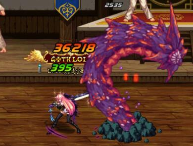
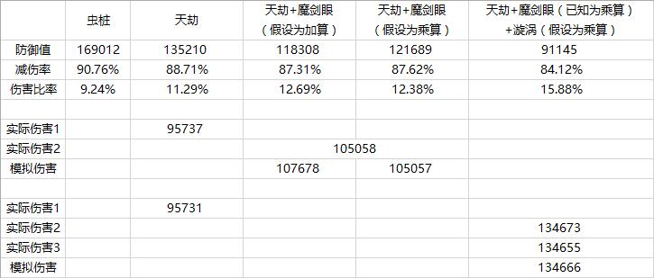

减防算法
固定类与百分比类装备
固定值类型与百分比类型的装备同时存在时，先计算固定值部分，后计算百分比部分。
| 虫桩 | 千蛛衣 | 千蛛衣+魔剑眼 | 千蛛衣+魔剑眼 | |
|---|---|---|---|---|
| 防御值 | 169012 | 157012 | 141311 | 140111 |
| 减伤率 | 90.76% | 90.13% | 89.15% | 89.07% |
| 伤害比率 | 9.24% | 9.87% | 10.85% | 10.93% |
| 实际伤害-1 | 36218 | 38719 | - | - |
| 实际伤害-2 | 36218 | 38719 | 42552 | - |
| 模拟伤害 | - | 38713 | 42554 | 42879 |
虫桩的原始防御为169012，对应减伤率为90.76%，故伤害比率为9.24%
将其设置为中毒状态，攻击并触发千蛛上衣的减防效果，此时伤害为36218
触发千蛛上衣的减防效果后，其防御为169012-12000=157012
对应减伤率为90.13%，故伤害比率为9.87%，模拟伤害为38713，与实际伤害38719吻合
。佩戴阿波菲斯之眼经过5s后，减防光环生效，由此测试两类减防装备的算法：
若先计算固定值部分
则计算后防御为（169012-12000）*（1-10%）=141311
对应减伤率为89.15%，故伤害比率为10.85%，模拟伤害为42554
若先计算百分比部分
则计算后防御为[169012*（1-10%）]-12000=140111
对应减伤率为89.07%，故伤害比率为10.93%，模拟伤害为42879
实际伤害为42552，与先计算固定值部分的模拟伤害42554吻合
故固定值类型与百分比类型的装备同时存在时，先计算固定值部分，后计算百分比部分
百分比与百分比类装备
百分比类型与百分比类型的装备同时存在时，二者的减防效果为乘算。
| 虫桩 | 千蛛衣 | 天劫+魔剑眼 | 天劫+魔剑眼 | |
|---|---|---|---|---|
| 防御值 | 169012 | 135210 | 118308 | 121689 |
| 减伤率 | 90.76% | 88.71% | 87.31% | 87.62% |
| 伤害比率 | 9.24% | 11.29% | 12.69% | 12.38% |
| 实际伤害-1 | 95737 | |||
| 实际伤害-2 | 105058 | |||
| 模拟伤害 | 107678 | 105057 | ||
虫桩的原始防御为169012，天劫套具有半径为300px的20%魔防削减光环
故此时其防御为169012*（1-20%）=135210，对应减伤率为88.71%，故伤害比率为11.29%
佩戴[阿波菲斯之眼]经过5s后，减防光环生效，由此测试两类减防装备的算法：
若二者为加算算法
则计算后防御为169012*（1-20%-10%）=118308
对应减伤率为87.31%，故伤害比率为12.69%，模拟伤害为107678。
若二者为乘算算法
则计算后防御为169012*（1-20%）*（1-10%）=121689
对应减伤率为87.62%，故伤害比率为12.38%，模拟伤害为105057。
实际伤害为105058，与二者为乘算算法的模拟伤害105057吻合。
故百分比类型与百分比类型的装备同时存在时，二者的减防效果为乘算。

角色技能与百分比类装备
角色技能与百分比类型的装备同时存在时，二者的减防效果为乘算。
基于上一次测试的结果，现已知百分比类型与百分比类型的装备同时存在时，二者的减防效果为乘算。
引入角色减防技能暗影漩涡，由此测试两类减防方式的算法：
若二者为加算算法（表格中未体现）
则计算后防御为169012*{1-[1-（1-20%）*（1-10%）]-25.1%}=79267，
对应减伤率为82.17%，故伤害比率为17.83%，模拟伤害为151185。
若二者为乘算算法
则计算后防御为169012*（1-20%）*（1-10%）*（1-25.1%）=91145，
对应减伤率为84.12%，故伤害比率为15.88%，模拟伤害为134666。
实际伤害为134673/134655，其平均值为134664，与二者为乘算算法的模拟伤害134666吻合。
故角色技能与百分比类型的装备同时存在时，二者的减防效果为乘算。
角色技能与角色技能
不同的角色技能同时存在时，二者的减防效果为加算。
| 虫桩 | 天劫 +绿阵 | 天劫 +绿阵+漩涡 | 天劫 +绿阵+漩涡 | |
|---|---|---|---|---|
| 防御值 | 169012 | 93295 | 59357 | 69878 |
| 减伤率 | 90.76% | 84.43% | 77.53% | 80.25% |
| 减伤比率 | 9.24% | 15.57% | 22.47% | 19.75% |
| 实际伤害-1 | 117387 | |||
| 实际伤害-2 | 169402 | |||
| 模拟伤害 | 169424 | 148955 | ||
基于上一次测试的结果，现已知角色技能与百分比类型的装备同时存在时，二者的减防效果为乘算
现已有天劫套装与角色减防技能侵蚀之普戾蒙
故此时其防御为169012*（1-20%）*（1-31%）=93295，对应减伤率为84.43%，故伤害比率为15.57%，此时伤害为117387
引入另一个角色减防技能暗影漩涡，由此测试两个减防技能的算法：
若二者为加算算法
则计算后防御为169012*（1-20%）*（1-31%-25.1%）=59357
对应减伤率为77.53%，故伤害比率为22.47%，模拟伤害为169424
若二者为乘算算法
则计算后防御为169012*（1-20%）*（1-31%）*（1-25.1%）=69878
对应减伤率为80.25%，故伤害比率为19.75%，模拟伤害为148955
实际伤害为169402，与二者为加算算法的模拟伤害169424吻合
故不同的角色技能同时存在时，二者的减防效果为加算
无视目标防御
“无视目标防御”为90版本新增史诗装备中出现的属性，即无视攻击目标一定比率的防御
典型装备为90级史诗太刀-妖刀-村正、90级史诗扫把-缚狼锁-Gleipnir、90级史诗板甲上衣-傲慢的自满之眼
其大体算法与百分比类型的减防装备相同：
- 在固定值类型的减防装备之后计算
- 与百分比类型的减防装备乘算
- 与角色的减防技能乘算
- 计算结果不会超过副本的减伤率下限
同时也存在一些不同之处：
- 不会因为怪物类型（精英、稀有、领主）而收到惩罚减益
- 同类型装备效果无法叠加，取最高值
- 仅佩戴该类型装备的角色可以享受
换算后的减伤率与前文不同是因为角色等级不同所致
测试角色为佩戴 妖刀-村正 的90级暗帝
虫桩的原始防御为169012，由于角色佩戴 妖刀-村正 ，故有效防御为169012*（1-20%）=135210。 对应减伤率为88.25%，故伤害比率为11.75%，此时伤害为255055
引入角色减防技能 暗影漩涡 ，由此测试两类减防方式的算法：
若二者为加算算法
则计算后防御为169012*（1-20%-24.4%）=93971
对应减伤率为83.92%，故伤害比率为16.08%，模拟伤害为339598
若二者为乘算算法
则计算后防御为169012*（1-20%）*（1-24.4%）=102218
对应减伤率为85.03%，故伤害比率为14.97%，模拟伤害为318049
实际伤害为316690，与二者为乘算算法的模拟伤害318049更为接近
由于测试角色的武器已强化，故对计算结果进行了无视部分的校正
虽然仍存在一定误差，但不影响结论的得出
故无视目标防御类型的装备与百分比类型的减防装备的大体算法相同
- 在固定值类型的减防装备之后计算
- 与百分比类型的减防装备乘算
- 与角色的减防技能乘算
- 计算结果不会超过副本的减伤率下限
同时也存在一些不同之处
- 不会因为怪物类型（精英、稀有、领主）而收到惩罚减益
- 同类型装备效果无法叠加，取最高值
- 仅佩戴该类型装备的角色可以享受
结论
有效防御值=（原始防御值-固定减防类装备总和）*（1-减防技能1-...-减防技能N）*（1-百分比减防类装备1）*...*（1-百分比减防类装备N）*（1-无视防御装备）
- 固定值类型与百分比类型的装备同时存在时，先计算固定值部分，后计算百分比部分
- 百分比类型与百分比类型的装备同时存在时，二者的减防效果为乘算
- 角色技能与百分比类型的装备同时存在时，二者的减防效果为乘算
- 不同的角色技能同时存在时，二者的减防效果为加算
- 无视目标防御类型的装备与百分比类型的减防装备的大体算法相同（见上），同时也存在一些不同之处
- 不会因为怪物类型（精英、稀有、领主）而收到惩罚减益
- 同类型装备效果无法叠加，取最高值
- 仅佩戴该类型装备的角色可以享受
减伤率下限
“减伤率下限”是针对DNF中部分副本设置的特殊系统，旨在防止因减防类技能、道具以及召唤兽等级等的过度堆叠而导致副本难度急剧下滑
目前已知具有“减伤率下限”系统的副本包括普通安徒恩副本、团队安徒恩副本、暴走安徒恩副本和普通卢克副本（团队卢克副本国服暂时未开放）
由于“减伤率下限”系统的存在，以上副本的怪物在减伤率达到一定限度后不会再下降
不同类副本的减伤率下限也存在差异
减伤率的计算公式：
减伤率=怪物防御值/（怪物防御值+攻击方等级*200
因此能够影响减伤率的因素有两个
-
1、怪物防御值
怪物防御值自身也具有固定的计算公式：怪物防御值=怪物等级*（怪物等级+1）*怪物防御系数*版本防御系数*副本难度系数，在此不过多展开。 在怪物防御值一定的前提下，还会受到减防类技能和道具的影响，其中减防类道具又可分为固定值型、百分比率型和无视防御型。 各类减防技能和道具的特点和算法在前文已有介绍。
-
2、攻击方等级
攻击方（角色或召唤兽）的等级也会直接影响减伤率。 召唤类职业（召唤师、机械师、死灵术士、次元行者等）所常说的“等级压制”效果实际上就是通过提高召唤兽自身的等级来减少减伤率。 使用“等级压制”这个词来描述这个特点其实是有待商酌的，因为在怪物防御值一定的情况下，影响减伤率的并不是双方的等级差，而是单纯的攻击方等级。
若攻击方等级固定，则可以根据减伤率下限推算出该副本中怪物的防御值下限，从而对团队职业组成和个人装备构建进行指导。
如何证明设置下限的是减伤率而不是防御值？可以参照@凡雪痕 对于[暴走安徒恩]的减伤率下限的测试帖
其测试（采用90级角色）和此帖的测试（采用86级角色）得出的减伤率下限基本一致，故可以证明设置下限的是减伤率而不是防御值
测试条件
选取86级暗殿骑士角色（卢克部分为90级暗殿骑士角色）和90级鬼泣角色进行测试，前者提供减防类技能、道具和伤害来源，后者提供减防类技能。